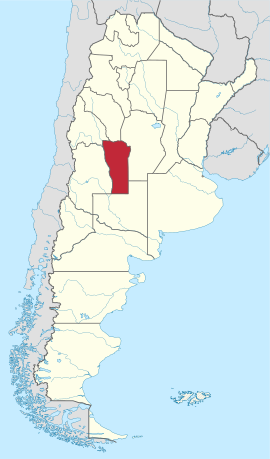

El animal mas valioso del mundo
Este es el animal mas raro que podemos encontrar en la naturaleza, se llama Vilarus Dinosaurus.
Es un Dinosaurus relacionado a la familia de los cocodrilos y los mamiferos acuaticos.
Se puede encontrar unicamente en la provincia de San Luis Argentina.
Adjuntamos ubicacion del animal

Este animal se caracteriza por que es relativamente facil conseguir que sea feliz.
Con tal de conseguirle este artefacto el animal sera feliz, insertamos artefacto
Exacto, estamos hablando de un teclado mecanico T dagger blanco y verde con switches brown o blue se aceptan red de 60%
¿ESTARIAS DISPUESTO/A A SACRIFICAR 7000 PESOS A CAMBIO DE LA FELICIDAD INCALCULABLE DE UN VILA SALVAJE? O SOS UN RATON RATONA
Adjuntamos link donde se puede asegurar la felicidad de un Vilita
https://articulo.mercadolibre.com.ar/MLA-1151607463-teclado-t-dagger-t-tgk321-gw-br-arena-greenwhite-brown-_JM#position=46&search_layout=stack&type=item&tracking_id=34ed5628-e17d-4779-91ca-11567368e916